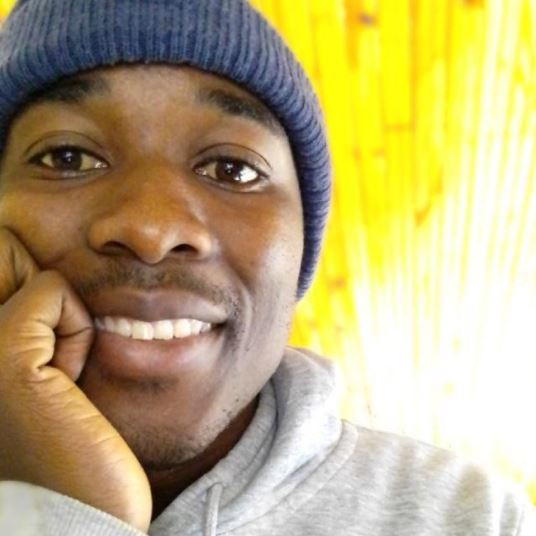

Frank Mantchichi | WDD 130
👋Hey there! I'm Frank Mantchichi, originally from Blantyre, Malawi. Currently, I'm enrolled as a BYU Idaho Online student, learning more about the world of computers, especially software and web designing. I'm passionate about tech, especially computers, and I have a great desire to learn and master the art of creating beautiful and engaging websites. It's not just about coding for me; it's about blending creativity with problem-solving to create memorable online experiences for people. This is everything I've ever wanted, a path I wholeheartedly embrace without regrets. It's not just about learning new skills; it's about building a future where my passion for technology and web design enriches every aspect of my life.